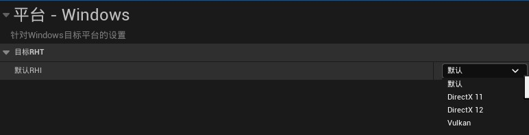

注意： UE5 默认使用的是 DX12，有可能会在渲染方面出现奇怪的问题，需要特别注意。
RHI 是 Render Hardware Interface 的缩写，虚幻引擎通过 RHI 把各个平台的图形 API 包装成统一接口，供上层渲染来使用，让业务不用过多的关注 API 细节（实际还得关注RHI 细节）。从代码结构上来看，RHI 封装的比较贴合于现代的图形 API(vulkan, metal, DX12)，也支持 opengl/opengles。这个接口是广义上的概念，不仅指 C++ 的纯虚基类，也包括一些全局变量，全局函数等。

参考：